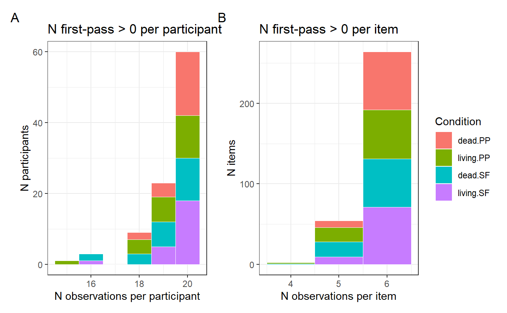
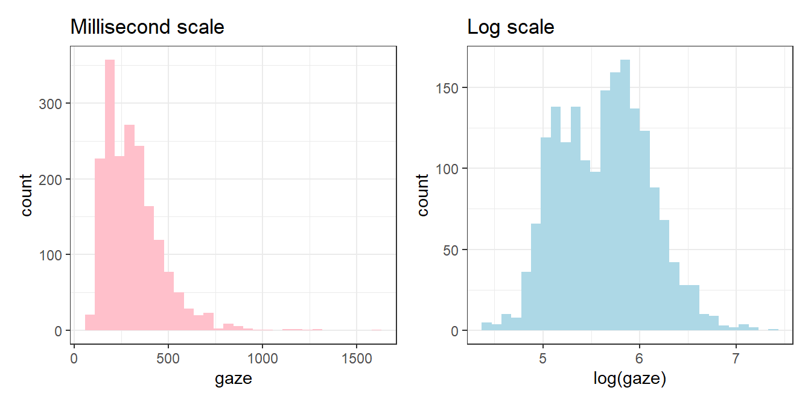
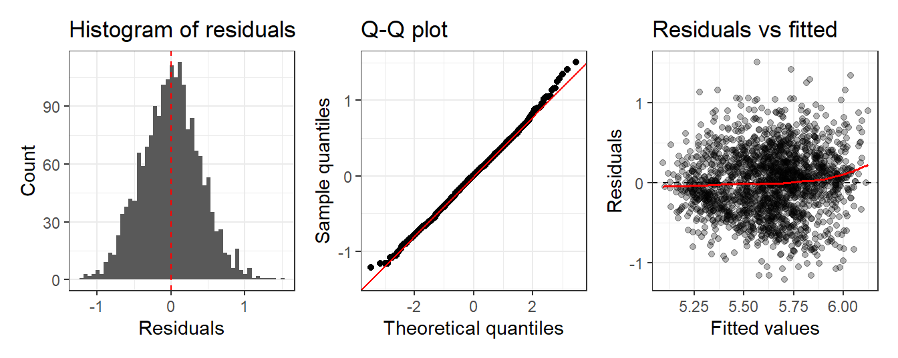
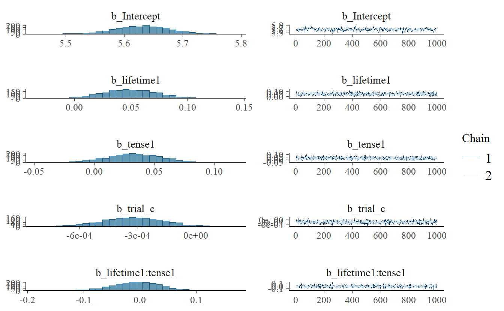
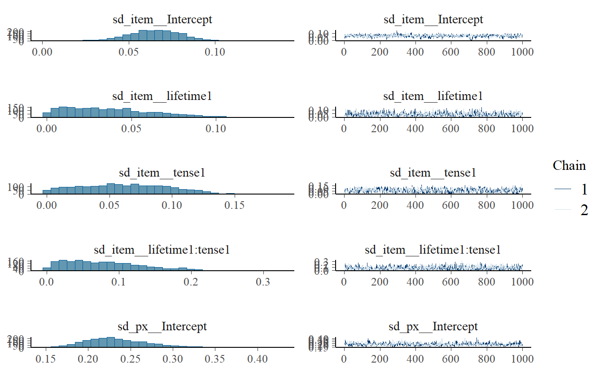
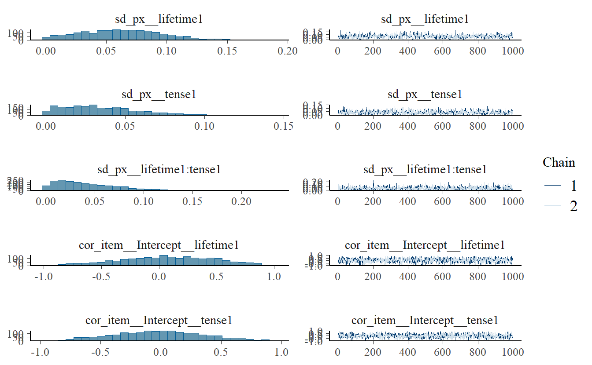
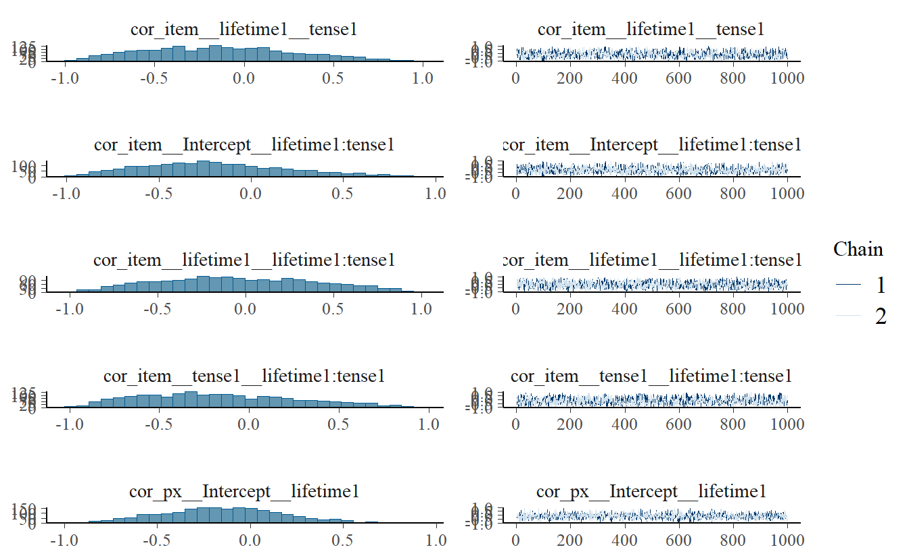
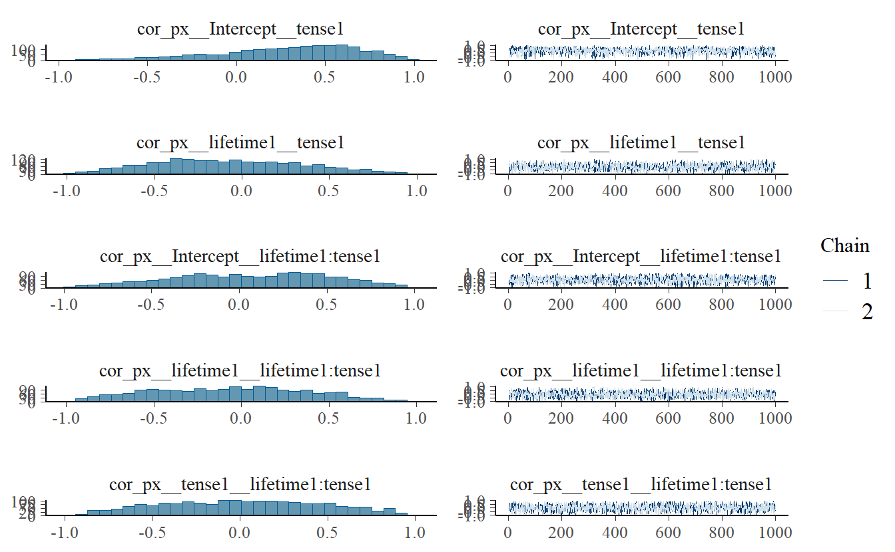
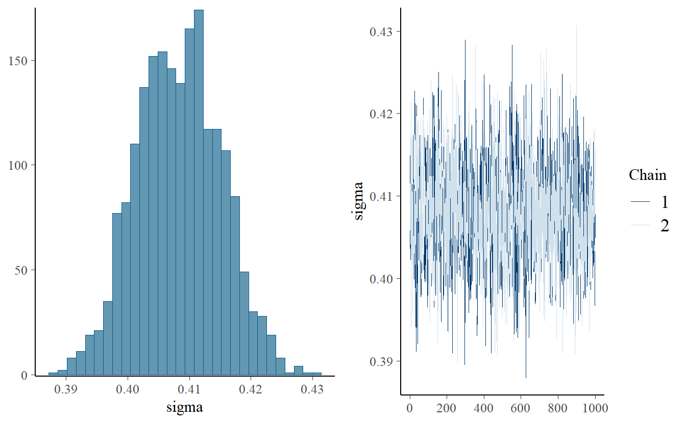
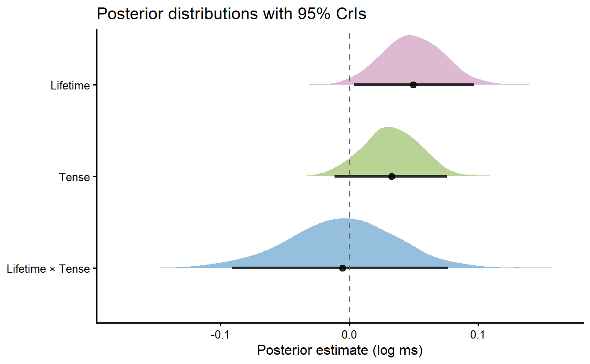

pacman::p_load(here, tidyverse, lme4, lmerTest, brms, broom.mixed, gt, kableExtra)6 Fitting and reporting models
Linear models, mixed effects, and Bayesian estimation
6.1 Purpose
This chapter covers fitting regression models to eyetracking data, extracting estimates for inline reporting, and producing publication-ready model summary tables, all within a reproducible Quarto document. We start with a simple linear model to establish the basics, then move to linear mixed-effects models to account for the repeated-measures structure of the data. We close with a Bayesian implementation of the same model using brms, and cover how to extract and report posterior estimates inline.
All models are fitted on first-pass reading time at the verb region from Palleschi et al. (2025), with data available from the accompanying OSF repository (Palleschi et al., 2026).
Set-up
Load packages.
Load data. N.B., we’ve skipped some filtering steps in our data preparation, so our results will be slightly different from the published results.
df_clean <- read_csv(here("data", "processed", "data_clean.csv"))Load in helper function to format p-values according to APA 7 style.
source(here("R", "helpers.R"))6.2 Data preparation
Before fitting any model, we:
- filter to the region of interest (verb)
- remove any missing first-pass duration values (
> 0) - apply contrast coding to categorical predictors
- centre the trial order variable
- inspect distribution of our dependent variable
First, check our data is fully balanced.
df_clean |> janitor::tabyl(px) |> count(n)
df_clean |> janitor::tabyl(item) |> count(n)We see we have data from 24 participants with all of them contributing 480 observations, and 80 items all with 144 observations. This is a useful first step to catch any unexpected imbalance (missing participants, dropped trials, or items with too few observations) before the data enter a model.
Then filter so that we only have reading times from the verb region, and trials where first-pass reading time was greater than 0 (i.e., wasn’t skipped):
df_verb <- df_clean |>
filter(region == "verb" & gaze > 0)
NoteSanity check: observations per condition
A random slope can only be estimated if there are multiple observations per unit per condition cell; the more observations per cell, the more reliably slope variance can be distinguished from residual error (e.g., Barr, 2013; Barr et al., 2013). A typical rule of thumb is N per cell > 5. Below this threshold, convergence issues with a maximal random effects structure are almost guaranteed in the frequentist framework (lme4, lmerTest). Bayesian models (brms) are more robust to sparse cells through partial pooling and prior regularisation, but low N per cell will still result in wide, uncertain posteriors for random effect parameters.
library(patchwork)
df_verb |>
count(item, lifetime, tense) |>
count(lifetime, tense, n, name = "n_items")#> # A tibble: 10 × 4
#> lifetime tense n n_items
#> <chr> <chr> <int> <int>
#> 1 dead PP 5 8
#> 2 dead PP 6 72
#> 3 dead SF 4 1
#> 4 dead SF 5 19
#> 5 dead SF 6 60
#> 6 living PP 4 1
#> 7 living PP 5 18
#> 8 living PP 6 61
#> 9 living SF 5 9
#> 10 living SF 6 71df_verb |>
count(px, lifetime, tense) |>
count(lifetime, tense, n, name = "n_participants")#> # A tibble: 14 × 4
#> lifetime tense n n_participants
#> <chr> <chr> <int> <int>
#> 1 dead PP 18 2
#> 2 dead PP 19 4
#> 3 dead PP 20 18
#> 4 dead SF 16 2
#> 5 dead SF 18 3
#> 6 dead SF 19 7
#> 7 dead SF 20 12
#> 8 living PP 15 1
#> 9 living PP 18 4
#> 10 living PP 19 7
#> 11 living PP 20 12
#> 12 living SF 16 1
#> 13 living SF 19 5
#> 14 living SF 20 18
Most participants contributed 20 observations per condition, though a small number contributed 18 or 16. Similarly, most items appeared 6 times per condition, with a small number appearing 5 or 4 times. The near-complete balance supports a maximal random effects structure for both grouping factors, but we may end up needing a simplified structure (especially given one item having 4 observations in the living PP condition).
6.2.1 Contrast coding
Both predictors are categorical with two levels and should be sum-coded so that the intercept represents the grand mean and each coefficient represents the deviation from it. We assign -0.5 to the theoretically “baseline” level in each case, creating a new variable with _c appended to the name to indicate it is centred:
lifetime:living= -0.5,dead= +0.5tense:pp(present perfect) = -0.5,sf(simple future) = +0.5
df_verb <- df_verb |>
mutate(
lifetime = factor(lifetime, levels = c("living", "dead")),
tense = factor(tense, levels = c("SF", "PP"))
)
contrasts(df_verb$lifetime) <- c(-0.5, 0.5)
contrasts(df_verb$tense) <- c(-0.5, 0.5)Note you can achieve the same thing with contr.sum(2) / 2, which divides the default ±1 values by 2 to give ±0.5. Always check your contrasts after setting them:
contrasts(df_verb$lifetime)#> [,1]
#> living -0.5
#> dead 0.5contrasts(df_verb$tense)#> [,1]
#> SF -0.5
#> PP 0.5
NoteAlternative:
±0.5 coding with if_else()
The if_else() function creates explicit numeric columns directly in the data wrangling pipeline:
df_verb <- df_verb |>
mutate(
lifetime = if_else(lifetime == "living", -0.5, 0.5),
tense = if_else(tense == "PP", -0.5, 0.5)
)This achieves the same sum coding as contr.sum(2) / 2 but with a few practical advantages: the coding is visible in the pipeline, it doesn’t require the variable to be a factor, and it won’t be lost if the data are re-read or re-factored. The tradeoff is that the original labels are overwritten, so plotting requires either a lookup or a separate label column.
6.2.2 Centre trial order
Critical trials were numbered 3–209, with 80 critical trials in total (the remainder being fillers). We centre within participant so that each participant’s trial effect is expressed relative to the midpoint:
df_verb <- df_verb |>
mutate(trial_c = trial - mean(trial))
NoteWhy centre and sum-code predictors?
Sum coding (-0.5 / +0.5) means the model intercept is the grand mean of the response, and each coefficient is the difference between one level and the grand mean. This makes coefficients interpretable as main effects in the presence of an interaction, unlike treatment (dummy) coding where the intercept is the mean of the reference level only.
Centring continuous predictors (subtracting the mean) serves a similar purpose: it makes the intercept meaningful (the predicted value at the average level of the predictor) and reduces collinearity between main effects and interactions. For trial_c, we centre around the mean critical trial position. Because the trial sequence was pseudorandomised and held constant across participants, this is equivalent to subtracting a constant — no group_by(px) is needed. Both practices also improve model convergence in mixed-effects models.
6.2.3 Log-transform the dependent variable
Fixation duration measures are typically right-skewed: most fixations are short, but a long tail of unusually long fixations pulls the mean upward. This violates the normality assumption of linear models. A log-transformation compresses the upper tail and produces residuals that more closely approximate a normal distribution.

The data are slightly bimodal (two peaks), but this will be absorbed by the random effects.
NoteInterpreting log-transformed estimates
Coefficients from a model fitted on log(gaze) are on the log-ms scale. To back-transform to the original millisecond scale, exponentiate:
exp(coef) # back-transform a single coefficient
exp(conf.low) # back-transform a confidence interval boundA coefficient of 0.05 on the log scale means a multiplicative change of exp(0.05) \(\approx\) 1.05, i.e. a 5% increase in fixation duration. For small effects, log-scale coefficients are approximately equal to proportional changes, but for larger effects exponentiation is necessary for accurate interpretation.
6.3 Linear mixed-effects model
The appropriate model for repeated-measures data includes random effects for both participants and items. We use lmer() from the lme4 package, with p-values provided by lmerTest.
6.3.1 Random effects structure
Let’s fit a model with the maximal random effects structure justified by our design and data:
lmer_gaze_mm <- lmer(
log(gaze) ~ lifetime * tense + trial_c +
(1 + lifetime * tense | px) +
(1 + lifetime * tense | item),
data = df_verb
)saveRDS(lmer_gaze_mm, here("output", "models", "lmer_gaze_mm.rds"))We get the warning boundary (singular) fit: see help('isSingular'). This tells us our random effects structure is overparameterised. We’ll skip how to find the model that converges and just run the model reported in the paper. I’m showing my code chunk options so you see my workflow:
```{r}
#| eval: false
lmer_gaze <-
lmer(log(gaze) ~ lifetime * tense + trial_c +
(1 + lifetime | px) +
(1 + tense | item),
data = df_verb,
control = lmerControl(optimizer = "bobyqa", # more stable than default Nelder_Mead
optCtrl = list(maxfun = 1e5))) # max function evaluations
```I run the models interactively, but set their code chunk options to eval: false. This is because I don’t want to run every model when I render the document. For my final model, or any model that I want to interact with in the rendered document, I save it as an .rds file (also with eval: false):
```{r}
#| eval: false
saveRDS(lmer_gaze, here("output", "models", "lmer_gaze.rds"))
```Then I load in the same file immediately after this, with eval: true. This way when I render the document I can still e.g., print the summary of the model.
```{r}
#| eval: true
lmer_gaze <- readRDS(here("output", "models", "lmer_gaze.rds"))
```summary(lmer_gaze)#> Linear mixed model fit by REML. t-tests use Satterthwaite's method [
#> lmerModLmerTest]
#> Formula: log(gaze) ~ lifetime * tense + trial_c + (1 + lifetime | px) +
#> (1 + tense | item)
#> Data: df_verb
#> Control: lmerControl(optimizer = "bobyqa", optCtrl = list(maxfun = 1e+05))
#>
#> REML criterion at convergence: 2113.3
#>
#> Scaled residuals:
#> Min 1Q Median 3Q Max
#> -2.9787 -0.6666 0.0224 0.6444 3.6965
#>
#> Random effects:
#> Groups Name Variance Std.Dev. Corr
#> item (Intercept) 0.004355 0.06599
#> tense1 0.005391 0.07343 -0.08
#> px (Intercept) 0.046834 0.21641
#> lifetime1 0.004621 0.06798 -0.21
#> Residual 0.166500 0.40804
#> Number of obs: 1862, groups: item, 80; px, 24
#>
#> Fixed effects:
#> Estimate Std. Error df t value Pr(>|t|)
#> (Intercept) 5.628e+00 4.578e-02 2.415e+01 122.935 <2e-16 ***
#> lifetime1 4.989e-02 2.349e-02 2.268e+01 2.124 0.0448 *
#> tense1 3.296e-02 2.063e-02 7.726e+01 1.598 0.1142
#> trial_c -3.248e-04 1.602e-04 1.820e+03 -2.027 0.0428 *
#> lifetime1:tense1 -5.040e-03 3.787e-02 1.662e+03 -0.133 0.8941
#> ---
#> Signif. codes: 0 '***' 0.001 '**' 0.01 '*' 0.05 '.' 0.1 ' ' 1
#>
#> Correlation of Fixed Effects:
#> (Intr) liftm1 tense1 tril_c
#> lifetime1 -0.118
#> tense1 -0.005 -0.010
#> trial_c 0.000 -0.038 0.008
#> liftm1:tns1 -0.003 -0.002 0.000 0.030
TipConvergence warnings
If the model fails to converge, the most common remedies in order of invasiveness are:
- Switch optimiser:
lmerControl(optimizer = "bobyqa")or"Nelder_Mead" - Increase the maximum number of function evaluations:
optCtrl = list(maxfun = 2e5) - Remove the interaction from the random slopes:
(1 + lifetime + tense | px) - Remove correlations between random effects:
(1 + lifetime * tense || px) - Fall back to random intercepts only:
(1 | px) + (1 | item)
In this case, the maximal by-item structure (1 + lifetime * tense | item) produced a singular fit, likely due to sparse cells (n = 6 per item per condition). Switching to bobyqa, increasing maxfun, and dropping some slopes resolved both issues. Always report what random effects structure was fitted and why, especially if you simplified from the maximal structure (Barr et al., 2013; Bates et al., 2015; Matuschek et al., 2017).
6.3.2 Model summary table
We can use broom.mixed::tidy() to extract model output into a tidy dataframe.
broom.mixed::tidy(lmer_gaze)#> # A tibble: 12 × 8
#> effect group term estimate std.error statistic df p.value
#> <chr> <chr> <chr> <dbl> <dbl> <dbl> <dbl> <dbl>
#> 1 fixed <NA> (Intercept) 5.63e+0 0.0458 123. 24.2 2.69e-35
#> 2 fixed <NA> lifetime1 4.99e-2 0.0235 2.12 22.7 4.48e- 2
#> 3 fixed <NA> tense1 3.30e-2 0.0206 1.60 77.3 1.14e- 1
#> 4 fixed <NA> trial_c -3.25e-4 0.000160 -2.03 1820. 4.28e- 2
#> 5 fixed <NA> lifetime1:te… -5.04e-3 0.0379 -0.133 1662. 8.94e- 1
#> 6 ran_pars item sd__(Interce… 6.60e-2 NA NA NA NA
#> 7 ran_pars item sd__tense1 7.34e-2 NA NA NA NA
#> 8 ran_pars item cor__(Interc… -7.69e-2 NA NA NA NA
#> 9 ran_pars px sd__(Interce… 2.16e-1 NA NA NA NA
#> 10 ran_pars px sd__lifetime1 6.80e-2 NA NA NA NA
#> 11 ran_pars px cor__(Interc… -2.07e-1 NA NA NA NA
#> 12 ran_pars Residual sd__Observat… 4.08e-1 NA NA NA NAWe can also pass the tidy table to kbl() from kableExtra for a formatted table, or gt() for HTML (kableExtra would also work, but gt() is better suited to HTML). You can do a lot of formatted to the table, and we also use our custom fmt_p function to format the p-values.
Code
tidy_tbl <- broom.mixed::tidy(lmer_gaze, effects = "fixed", conf.int = TRUE) |>
mutate(
across(c(estimate, std.error, conf.low, conf.high), \(x) round(x, 3)),
statistic = round(statistic, 2),
p.value = fmt_p(p.value, table = TRUE)
) |>
select(-effect)
if (knitr::is_latex_output()) {
tidy_tbl |>
mutate(term = str_replace_all(term, "_", "\\\\_")) |>
kbl(booktabs = TRUE, format = "latex", escape = FALSE,
col.names = c("Term", "$\\beta$", "SE", "$t$", "df", "$p$",
"95\\% CI lower", "95\\% CI upper")) |>
kable_styling(latex_options = c("hold_position", "scale_down"))
} else {
tidy_tbl |>
gt() |>
cols_label(
term = "Term",
estimate = "β",
std.error = "SE",
statistic = "t",
df = "df",
p.value = "p",
conf.low = "95% CI lower",
conf.high = "95% CI upper"
) |>
tab_style(
style = cell_text(weight = "bold"),
locations = cells_column_labels()
)
}| Term | β | SE | t | df | p | 95% CI lower | 95% CI upper |
|---|---|---|---|---|---|---|---|
| (Intercept) | 5.628 | 0.046 | 122.93 | 24.15069 | < .001 | 5.533 | 5.722 |
| lifetime1 | 0.050 | 0.023 | 2.12 | 22.67927 | < .05 | 0.001 | 0.099 |
| tense1 | 0.033 | 0.021 | 1.60 | 77.25738 | .114 | -0.008 | 0.074 |
| trial_c | 0.000 | 0.000 | -2.03 | 1819.77731 | < .05 | -0.001 | 0.000 |
| lifetime1:tense1 | -0.005 | 0.038 | -0.13 | 1661.63286 | .894 | -0.079 | 0.069 |
6.3.3 Inline reporting
lmer_tidy <- broom.mixed::tidy(lmer_gaze, effects = "fixed", conf.int = TRUE)
b_trial_lmer <- lmer_tidy |> filter(term == "trial_c") |> pull(estimate) |> round(2)
se_trial_lmer <- lmer_tidy |> filter(term == "trial_c") |> pull(std.error) |> round(2)
t_trial_lmer <- lmer_tidy |> filter(term == "trial_c") |> pull(statistic) |> round(2)
p_trial_lmer <- lmer_tidy |> filter(term == "trial_c") |> pull(p.value) |> fmt_p(3)There was a main effect of lifetime, with longer first-pass reading times
for dead versus living referents ($\beta$ = 0, SE = 0,
*t* = -2.03, *p* < .05).There was a main effect of lifetime, with longer first-pass reading times for dead versus living referents (\(\beta\) = 0, SE = 0, t = -2.03, p < .05).
NoteBimodality in the raw data is not necessarily a problem
Inspection of the raw first-pass reading times revealed a bimodal distribution in log space, reflecting a mixture of single-fixation and refixation trials. This might seem to violate the normality assumption of linear mixed-effects models, but the assumption applies to the residuals, not the raw data. Once the model has accounted for systematic variance (fixed effects) and between-participant and between-item variability (random effects), the residuals are expected to be approximately normally distributed even if the raw outcome variable is not.
Residual inspection confirms this: the residual histogram (Figure 6.3 A) is unimodal and approximately symmetric, centred on zero, and the Q-Q plot (Figure 6.3 B) shows good agreement with the theoretical normal distribution in the central range, with only minor deviation in the tails, which is typical for log-transformed reading time data. The residuals vs. fitted plot (Figure 6.3 C) showed no systematic pattern across most of the fitted value range, with a slight upturn at higher fitted values indicating minor heteroscedasticity, which is common with reading time data even after log transformation and is unlikely to meaningfully affect inference.

The practical takeaway is that residual plots, not plots of the raw outcome, are the appropriate diagnostic for assessing whether the normality assumption has been met.
6.4 Reporting the model in a methods section
Before reporting individual parameter estimates, a methods or results section should describe the model itself: the formula fitted, the data it was applied to, and any decisions made about the random effects structure. All of this can be extracted directly from the fitted model object and reported inline, ensuring consistency between the model and the write-up.
lmer_gaze <- readRDS(here("output", "models", "lmer_gaze.rds"))
n_obs <- nobs(lmer_gaze)
n_px <- summary(lmer_gaze)$ngrps[["px"]]
n_items <- summary(lmer_gaze)$ngrps[["item"]]
model_formula <- deparse1(formula(lmer_gaze))
optimizer <- lmer_gaze@optinfo$optimizer
n_evals <- format(lmer_gaze@optinfo$control$maxfun, scientific = FALSE, big.mark = ",")
# contrast coding
lifetime_contrasts_lmer <- contrasts(lmer_gaze@frame$lifetime)
tense_contrasts_lmer <- contrasts(lmer_gaze@frame$tense)
# skipped trials
n_total <- n_px * n_items
n_dropped <- n_total - n_obs
pct_dropped <- round(n_dropped / n_total * 100, 1)The dataset comprised 1862 observations from 24 participants across
80 items. 58 trials (3%) were excluded due to
first-pass reading times of zero, indicating the region was skipped. First-pass reading time at the verb region was analysed using a linear
mixed-effects model fitted with `lme4` [@bates_et_al_2015] and `lmerTest`
[@kuznetsova_et_al_2017], with Satterthwaite's method for degrees of freedom.
The model formula was log(gaze) ~ lifetime * tense + trial_c + (1 + lifetime | px) + (1 + tense | item). Categorical predictors were sum-coded
(-0.5/+0.5): lifetime (living =
-0.5, dead =
0.5) and tense (SF
= -0.5, PP =
0.5). Trial order was centred around the mean critical
trial position. The by-item interaction slope was dropped from the maximal random
effects structure due to a singular fit, likely reflecting sparse cells (n = 6
observations per item per condition). The model was fitted using the bobyqa
optimiser with a maximum of 100,000 function evaluations.This will be printed as:
The dataset comprised 1862 observations from 24 participants across 80 items. 58 trials (3%) were excluded due to first-pass reading times of zero, indicating the region was skipped. First-pass reading time at the verb region was analysed using a linear mixed-effects model fitted with
lme4(Bates et al., 2015) andlmerTest(Kuznetsova et al., 2017), with Satterthwaite’s method for degrees of freedom. The model formula was log(gaze) ~ lifetime * tense + trial_c + (1 + lifetime | px) + (1 + tense | item). Categorical predictors were sum-coded (-0.5/+0.5): lifetime (living = -0.5, dead = 0.5) and tense (SF = -0.5, PP = 0.5). Trial order was centred around the mean critical trial position. The by-item interaction slope was dropped from the maximal random effects structure due to a singular fit, likely reflecting sparse cells (n = 6 observations per item per condition). The model was fitted using the bobyqa optimiser with a maximum of 100,000 function evaluations.
TipWhat to report for a mixed-effects model
- The R packages used and their versions (extractable from
sessionInfo()) - The full model formula, including random effects structure and contrast coding scheme
- Any simplifications from the maximal structure and the reason (e.g. singular fit, convergence failure)
- The optimiser used and any non-default control parameters
- The number of observations, participants, and items
- The contrast coding scheme for categorical predictors
6.5 Bayesian mixed-effects model
We fit the same model using brms, which provides a full posterior distribution over all parameters rather than point estimates, giving us richer uncertainty quantification and a principled framework for incorporating prior knowledge. Importantly, we can also retain our maximal random effects structure because the priors regularise poorly-constrained parameters instead of producing the singular fits and convergence failures common in lme4. We use default priors for today’s purposes, but in practice you would set and report weakly informative priors that reflect domain knowledge about plausible values for your dependent variable, and verify them with a prior predictive check.
6.5.1 Fit the model
We use lognormal() as the likelihood, which is appropriate for right-skewed positive RT data. We run 2 chains with 2000 iterations (1000 warmup) — enough for a teaching example, but for a real model you’d want 4 chains and 4000 iterations. The seed argument ensures reproducibility.
brm_gaze <- brm(
gaze ~ lifetime * tense + trial_c +
(1 + lifetime * tense | px) + # by-participant
(1 + lifetime * tense | item), # by-item
data = df_verb,
family = lognormal(),
chains = 2,
iter = 2000,
warmup = 1000,
seed = 416,
# cores = parallel::detectCores() - 1 # parallelise chains
file = here("output", "models", "brm_gaze.rds") # cache model
)We get a low ESS warning because we’re running a minimal number of chains and iterations for demonstration purposes. For a real model, change these settings to:
chains = 4,
iter = 4000,
warmup = 2000,Inspect model summary.
summary(brm_gaze)#> Family: lognormal
#> Links: mu = identity
#> Formula: gaze ~ lifetime * tense + trial_c + (1 + lifetime * tense | px) + (1 + lifetime * tense | item)
#> Data: df_verb (Number of observations: 1862)
#> Draws: 2 chains, each with iter = 2000; warmup = 1000; thin = 1;
#> total post-warmup draws = 2000
#>
#> Multilevel Hyperparameters:
#> ~item (Number of levels: 80)
#> Estimate Est.Error l-95% CI u-95% CI Rhat
#> sd(Intercept) 0.06 0.02 0.03 0.09 1.00
#> sd(lifetime1) 0.04 0.03 0.00 0.10 1.00
#> sd(tense1) 0.06 0.04 0.00 0.13 1.00
#> sd(lifetime1:tense1) 0.08 0.06 0.01 0.21 1.01
#> cor(Intercept,lifetime1) 0.07 0.42 -0.76 0.82 1.00
#> cor(Intercept,tense1) -0.01 0.38 -0.72 0.72 1.00
#> cor(lifetime1,tense1) -0.13 0.42 -0.83 0.70 1.00
#> cor(Intercept,lifetime1:tense1) -0.19 0.40 -0.85 0.67 1.00
#> cor(lifetime1,lifetime1:tense1) -0.04 0.44 -0.81 0.79 1.00
#> cor(tense1,lifetime1:tense1) -0.16 0.44 -0.87 0.73 1.00
#> Bulk_ESS Tail_ESS
#> sd(Intercept) 661 544
#> sd(lifetime1) 671 1009
#> sd(tense1) 507 684
#> sd(lifetime1:tense1) 717 1066
#> cor(Intercept,lifetime1) 2046 1342
#> cor(Intercept,tense1) 1343 1295
#> cor(lifetime1,tense1) 859 1449
#> cor(Intercept,lifetime1:tense1) 1726 1151
#> cor(lifetime1,lifetime1:tense1) 1360 1683
#> cor(tense1,lifetime1:tense1) 1192 1693
#>
#> ~px (Number of levels: 24)
#> Estimate Est.Error l-95% CI u-95% CI Rhat
#> sd(Intercept) 0.23 0.04 0.17 0.32 1.00
#> sd(lifetime1) 0.06 0.03 0.01 0.14 1.01
#> sd(tense1) 0.03 0.02 0.00 0.09 1.00
#> sd(lifetime1:tense1) 0.04 0.03 0.00 0.12 1.00
#> cor(Intercept,lifetime1) -0.14 0.33 -0.75 0.54 1.00
#> cor(Intercept,tense1) 0.28 0.39 -0.59 0.89 1.00
#> cor(lifetime1,tense1) -0.07 0.43 -0.82 0.77 1.00
#> cor(Intercept,lifetime1:tense1) 0.06 0.45 -0.80 0.84 1.00
#> cor(lifetime1,lifetime1:tense1) -0.06 0.44 -0.84 0.77 1.00
#> cor(tense1,lifetime1:tense1) 0.02 0.46 -0.80 0.86 1.00
#> Bulk_ESS Tail_ESS
#> sd(Intercept) 397 749
#> sd(lifetime1) 555 669
#> sd(tense1) 913 977
#> sd(lifetime1:tense1) 1665 1171
#> cor(Intercept,lifetime1) 2031 1162
#> cor(Intercept,tense1) 2018 1384
#> cor(lifetime1,tense1) 1870 1460
#> cor(Intercept,lifetime1:tense1) 3137 1269
#> cor(lifetime1,lifetime1:tense1) 2372 1546
#> cor(tense1,lifetime1:tense1) 2404 1750
#>
#> Regression Coefficients:
#> Estimate Est.Error l-95% CI u-95% CI Rhat Bulk_ESS Tail_ESS
#> Intercept 5.63 0.05 5.53 5.72 1.01 244 512
#> lifetime1 0.05 0.02 0.00 0.10 1.00 2229 1583
#> tense1 0.03 0.02 -0.01 0.08 1.00 2420 1451
#> trial_c -0.00 0.00 -0.00 0.00 1.00 1958 1530
#> lifetime1:tense1 -0.01 0.04 -0.09 0.08 1.00 2891 1264
#>
#> Further Distributional Parameters:
#> Estimate Est.Error l-95% CI u-95% CI Rhat Bulk_ESS Tail_ESS
#> sigma 0.41 0.01 0.40 0.42 1.00 2176 1559
#>
#> Draws were sampled using sampling(NUTS). For each parameter, Bulk_ESS
#> and Tail_ESS are effective sample size measures, and Rhat is the potential
#> scale reduction factor on split chains (at convergence, Rhat = 1).
TipCache your models with
file =
The file argument saves the fitted model to disk. On subsequent renders, brms will load the cached model rather than re-fitting, saving considerable time. The file is invalidated automatically if the model formula, data, or priors change. Use here() to keep the path relative to the project root.
6.5.2 Model diagnostics
Check convergence via trace plots and \(\hat{R}\) values:
plot(brm_gaze) # trace plots and rank plots for each parameter





NoteInterpreting convergence diagnostics
Trace plots show the sampled values for each parameter across iterations. A healthy trace plot looks like a “hairy caterpillar”: the chains mix well, overlap completely, and show no trends or drifts. The posterior histogram alongside it should be smooth and unimodal.
\(\hat{R}\) (Rhat) measures agreement between chains. Values < 1.01 indicate convergence. ESS (effective sample size) measures how many independent samples you effectively have; both Bulk_ESS and Tail_ESS should exceed 1000. Low ESS means noisier estimates but not necessarily wrong ones; running more chains and iterations will fix it (recall that we cut our chains and iterations in half in the interest of running models faster during the workshop).
posterior::summarise_draws(brm_gaze, "rhat", "ess_bulk", "ess_tail") |>
summarise(
max_rhat = max(rhat, na.rm = TRUE),
min_ess_bulk = min(ess_bulk, na.rm = TRUE),
min_ess_tail = min(ess_tail, na.rm = TRUE)
)#> # A tibble: 1 × 3
#> max_rhat min_ess_bulk min_ess_tail
#> <dbl> <dbl> <dbl>
#> 1 1.01 244. 512.6.5.3 Model summary table
Code
brm_tidy_tbl <- as_draws_df(brm_gaze) |>
select(starts_with("b_")) |>
pivot_longer(everything(), names_to = "term", values_to = "value") |>
group_by(term) |>
summarise(
mean = round(mean(value), 3),
sd = round(sd(value), 3),
q2.5 = round(quantile(value, 0.025), 3),
q97.5 = round(quantile(value, 0.975), 3)
) |>
mutate(term = str_remove(term, "^b_")) |>
arrange(match(term, c("Intercept", "lifetime1", "tense1",
"lifetime1:tense1", "trial_c")))
if (knitr::is_latex_output()) {
brm_tidy_tbl |>
mutate(term = str_replace_all(term, "_", "\\\\_")) |>
kbl(booktabs = TRUE, format = "latex", escape = FALSE,
col.names = c("Term", "Posterior mean", "SD", "2.5\\%", "97.5\\%")) |>
add_header_above(c(" " = 3, "95\\% Credible Interval" = 2), escape = FALSE)
} else {
brm_tidy_tbl |>
gt() |>
cols_label(
term = "Term",
mean = "Posterior mean",
sd = "SD",
q2.5 = "2.5%",
q97.5 = "97.5%"
) |>
tab_spanner(label = "95% Credible Interval", columns = c(q2.5, q97.5)) |>
tab_style(
style = cell_text(weight = "bold"),
locations = cells_column_labels()
)
}| Term | Posterior mean | SD |
95% Credible Interval
|
|
|---|---|---|---|---|
| 2.5% | 97.5% | |||
| Intercept | 5.631 | 0.048 | 5.534 | 5.723 |
| lifetime1 | 0.049 | 0.024 | 0.004 | 0.097 |
| tense1 | 0.033 | 0.022 | -0.011 | 0.076 |
| lifetime1:tense1 | -0.005 | 0.042 | -0.091 | 0.076 |
| trial_c | 0.000 | 0.000 | -0.001 | 0.000 |
6.5.4 Posterior distributions
Code
library(tidybayes)
library(ggdist)
brm_gaze |>
gather_draws(b_lifetime1, b_tense1, `b_lifetime1:tense1`) |>
mutate(.variable = factor(.variable,
levels = c("b_lifetime1:tense1", "b_tense1", "b_lifetime1"),
labels = c("Lifetime × Tense", "Tense", "Lifetime"))) |>
ggplot(aes(x = .value, y = .variable, fill = .variable)) +
stat_halfeye(
point_interval = mean_qi,
.width = 0.95,
alpha = 0.8,
height = 0.6,
normalize = "groups"
) +
geom_vline(xintercept = 0, linetype = "dashed", colour = "grey40") +
scale_fill_manual(values = c("#7BAFD4", "#A8C87A", "#D4A8C7")) +
guides(fill = "none") +
labs(x = "Posterior estimate (log ms)", y = NULL,
title = "Posterior distributions with 95% CrIs") +
theme_classic(base_size = 12)
6.5.5 Inline reporting
Extract posterior summaries for specific parameters:
brm_draws <- as_draws_df(brm_gaze)
# lifetime main effect
b_life_mean <- round(mean(brm_draws$b_lifetime1), 3)
b_life_sd <- round(sd(brm_draws$b_lifetime1), 3)
b_life_lower <- round(quantile(brm_draws$b_lifetime1, 0.025), 3)
b_life_upper <- round(quantile(brm_draws$b_lifetime1, 0.975), 3)
# probability of direction: proportion of draws on the positive side
life_draws <- brm_draws$b_lifetime1
p_life_pos <- round(mean(life_draws > 0), 2)Looking at the model summary above, we can see the lifetime effect has a posterior mean of 0.05 (Est.Error = 0.02, 95% CrI [0.00, 0.10]). The credible interval just excludes zero, suggesting weak evidence for longer first-pass reading times for dead versus living referents. We can extract and report this inline:
There was a weak effect of lifetime, with longer first-pass reading times
for dead versus living referents (posterior mean = 0.049,
SD = 0.024, 95% CrI [0.004, 0.097];
*P*($\beta$ > 0) = 0.98).Which renders as:
There was a weak effect of lifetime, with longer first-pass reading times for dead versus living referents (posterior mean = 0.049, SD = 0.024, 95% CrI [0.004, 0.097]; P(\(\beta\) > 0) = 0.98).
TipReporting Bayesian results: key differences from frequentist
comparison_tbl <- tibble::tribble(
~concept, ~lmer, ~brms,
"Point estimate", "$\\beta$ (fixed effect)", "Posterior mean or median",
"Uncertainty", "Standard error (SE)", "Posterior SD",
"Interval", "95\\% CI", "95\\% CrI",
"Evidence", "\\textit{p}-value", "$P(\\beta > 0)$; CrI excludes zero"
)
if (knitr::is_latex_output()) {
comparison_tbl |>
kbl(booktabs = TRUE, format = "latex", escape = FALSE,
col.names = c("", "Frequentist (\\texttt{lmer})", "Bayesian (\\texttt{brms})")) |>
kable_styling(latex_options = "hold_position")
} else {
tibble::tribble(
~` `, ~`Frequentist (lmer)`, ~`Bayesian (brms)`,
"Point estimate", "β (fixed effect)", "Posterior mean or median",
"Uncertainty", "Standard error (SE)", "Posterior SD",
"Interval", "95% CI", "95% CrI",
"Evidence", "*p*-value", "*P*(β > 0); CrI excludes zero"
) |>
gt() |>
fmt_markdown(columns = everything()) |>
tab_style(
style = cell_text(weight = "bold"),
locations = cells_column_labels()
)
}| Frequentist (lmer) | Bayesian (brms) | |
|---|---|---|
| Point estimate | β (fixed effect) | Posterior mean or median |
| Uncertainty | Standard error (SE) | Posterior SD |
| Interval | 95% CI | 95% CrI |
| Evidence | p-value | P(β > 0); CrI excludes zero |
A few important distinctions in how you write up results:
- The 95% CrI can be interpreted directly: “there is a 95% probability the true effect lies between 0.004 and 0.097.” A frequentist CI does not support this interpretation.
- There is no p-value. Instead, report the probability of direction — the proportion of posterior draws on the expected side of zero. A value of 0.98 means 98% of posterior draws are positive.
- Do not say “significant.” Instead, describe the posterior: “the credible interval excludes zero”, “the bulk of the posterior mass is positive”, or “there is weak/strong evidence for an effect of…”
- The
Est.Errorin thebrmssummary is the posterior SD, not a standard error in the frequentist sense — label it SD in your write-up.
6.6 Reporting the Bayesian model in a methods section
The same information extracted for the frequentist model applies to the Bayesian model, with a few additions: the prior distributions, the sampler settings, and the key diagnostics used to verify convergence.
m_brm <- readRDS(here("output", "models", "brm_gaze.rds"))
# sampler settings
n_chains <- m_brm$fit@sim$chains
n_iter <- m_brm$fit@sim$iter
n_warmup <- m_brm$fit@sim$warmup
n_samples <- (n_iter - n_warmup) * n_chains
# number of observations, participants, items
n_obs_brm <- nrow(m_brm$data)
n_px_brm <- n_distinct(m_brm$data$px)
n_items_brm <- n_distinct(m_brm$data$item)
# contrast coding
lifetime_contrasts <- contrasts(m_brm$data$lifetime)
tense_contrasts <- contrasts(m_brm$data$tense)
# model formula
brm_formula <- deparse1(m_brm$formula$formula)
# priors
brm_priors <- prior_summary(m_brm)
prior_intercept <- brm_priors |> filter(class == "Intercept") |> pull(prior)
prior_b <- brm_priors |> filter(class == "b", coef == "") |> pull(prior)
prior_sd <- brm_priors |> filter(class == "sd", coef == "") |> pull(prior) |> unique()
prior_sigma <- brm_priors |> filter(class == "sigma") |> pull(prior)
prior_cor <- brm_priors |> filter(class == "cor") |> pull(prior) |> unique()
# convergence
max_rhat <- round(max(rhat(m_brm), na.rm = TRUE), 3)First-pass reading time at the verb region was analysed using a Bayesian
linear mixed-effects model fitted with `brms` [@burkner_2017], using the
same formula as the frequentist model: gaze ~ lifetime * tense + trial_c + (1 + lifetime * tense | px) + (1 + lifetime * tense | item). Lifetime was
sum-coded with living =
-0.5 and dead =
0.5; tense was sum-coded with
SF = -0.5 and
PP = 0.5. The following
priors were used: student_t(3, 5.7, 2.5) for the intercept, for
fixed effects, student_t(3, 0, 2.5), for random effect standard deviations,
student_t(3, 0, 2.5) for the residual standard deviation, and for
random effect correlations. The model was fitted with 2 chains
of 2000 iterations each, with 1000 warmup iterations,
yielding 2000 post-warmup samples. Convergence was assessed via
trace plots and $\hat{R}$ values; all $\hat{R}$ values were below 1.01
(max $\hat{R}$ = 1.014). The dataset comprised 1862
observations from 24 participants across 80 items.First-pass reading time at the verb region was analysed using a Bayesian linear mixed-effects model fitted with
brms(Bürkner, 2017), using the maximal random effects structure: gaze ~ lifetime * tense + trial_c + (1 + lifetime * tense | px) + (1 + lifetime * tense | item). Lifetime was sum-coded with living = -0.5 and dead = 0.5; tense was sum-coded with SF = -0.5 and PP = 0.5. The following priors were used: student_t(3, 5.7, 2.5) for the intercept, for fixed effects, student_t(3, 0, 2.5), for random effect standard deviations, student_t(3, 0, 2.5) for the residual standard deviation, and for random effect correlations. The model was fitted with 2 chains of 2000 iterations each, with 1000 warmup iterations, yielding 2000 post-warmup samples. Convergence was assessed via trace plots and \(\hat{R}\) values; all \(\hat{R}\) values were below 1.01 (max \(\hat{R}\) = 1.014). The dataset comprised 1862 observations from 24 participants across 80 items.
NoteWhat to report:
lmer() vs brms()
| **What** | lmer() |
brms() |
|---|---|---|
| Model formula | deparse1(formula(m)) |
deparse1(m$formula$formula) |
| N observations | nobs(m) |
nrow(m$data) |
| N participants | summary(m)$ngrps[['px']] |
n_distinct(m$data$px) |
| N items | summary(m)$ngrps[['item']] |
n_distinct(m$data$item) |
| Contrast coding | contrasts(m@frame$lifetime) |
contrasts(m$data$lifetime) |
| Optimiser | m@optinfo$optimizer |
NUTS (default) |
| Iterations | m$fit@sim$iter |
|
| Warmup | m$fit@sim$warmup |
|
| Chains | m$fit@sim$chains |
|
| Convergence | isSingular(m); check Hessian warnings |
rhat(m); all should be < 1.01 |
| Point estimate | tidy(m) |> pull(estimate) |
as_draws_df(m) |> summarise(mean(b_...)) |
| Uncertainty | SE: tidy(m) |> pull(std.error) |
SD: as_draws_df(m) |> summarise(sd(b_...)) |
| Interval | 95% CI: tidy(m, conf.int=TRUE) |
95% CrI: as_draws_df(m) |> quantile() |
| Test statistic | t: tidy(m) |> pull(statistic) |
P(b > 0): mean(draws > 0) |
| p-value / evidence | p: tidy(m) |> pull(p.value) |
No p-value; report CrI + P(direction) |
| Priors | prior_summary(m) |
|
| Random effects | as.data.frame(VarCorr(m)) |
as_draws_df(m) |> select(starts_with('sd_')) |
NotePriors: what to set and what to report
Priors encode your assumptions about plausible parameter values before seeing the data. For eyetracking measures like first-pass reading time, we have strong domain knowledge: typical first-pass reading times fall in the 150–600 ms range, with a longer upper tail due to refixation trials. This justifies using weakly informative priors.
What to report in a write-up:
- The prior distributions for all parameters (intercept, slopes, random effect SDs, residual SD)
- A brief justification for each prior (domain knowledge, regularisation, or previous literature)
- Whether a prior predictive check was run to confirm priors generate plausible data before fitting
Useful diagnostics to check and report:
summary(brm_gaze): \(\hat{R}\) values — all should be < 1.01plot(brm_gaze): trace plots and rank plots for chain mixingpp_check(brm_gaze): posterior predictive check — does the model reproduce the shape of your data?- Effective sample size (
Bulk_ESS,Tail_ESS) — should be > 1000
At minimum, a reproducible manuscript should report: prior distributions, \(\hat{R}\) values, and a posterior predictive check.
6.7 Summary
| Topic | Key functions | Package |
|---|---|---|
| Contrast coding | if_else(), mutate() |
dplyr |
| Centre predictors | mutate(), group_by() |
dplyr |
| Sanity check | tabyl() |
janitor |
| Simple linear model | lm(), summary() |
base R |
| Mixed-effects model | lmer() |
lme4, lmerTest |
| Bayesian model | brm() |
brms |
| Model summary table | tidy(), gt() |
broom, broom.mixed, gt |
| Extract estimates | tidy(), filter(), pull() |
broom.mixed, dplyr |
| Posterior draws | as_draws_df() |
brms |
| Prior specification | prior(), set_prior() |
brms |
| Model diagnostics | pp_check(), plot(), summary() |
brms |
| Inline reporting | `r ...` |
Quarto |
Session Info
ImportantReproducibility: Session Info
Always run sessionInfo() at the end of every script. This records your R version, package versions, and system information — an essential step for computational reproducibility.
sessionInfo()#> R version 4.4.1 (2024-06-14 ucrt)
#> Platform: x86_64-w64-mingw32/x64
#> Running under: Windows 11 x64 (build 22631)
#>
#> Matrix products: default
#>
#>
#> locale:
#> [1] LC_COLLATE=English_Canada.utf8 LC_CTYPE=English_Canada.utf8
#> [3] LC_MONETARY=English_Canada.utf8 LC_NUMERIC=C
#> [5] LC_TIME=English_Canada.utf8
#>
#> time zone: Europe/Berlin
#> tzcode source: internal
#>
#> attached base packages:
#> [1] stats graphics grDevices datasets utils methods base
#>
#> other attached packages:
#> [1] ggdist_3.3.3 tidybayes_3.0.7 patchwork_1.3.2
#> [4] kableExtra_1.4.0 gt_1.3.0 broom.mixed_0.2.9.7
#> [7] brms_2.23.0 Rcpp_1.1.1-1 lmerTest_3.2-1
#> [10] lme4_2.0-1 Matrix_1.7-0 lubridate_1.9.5
#> [13] forcats_1.0.1 stringr_1.6.0 dplyr_1.2.1
#> [16] purrr_1.2.2 readr_2.2.0 tidyr_1.3.2
#> [19] tibble_3.3.1 ggplot2_4.0.2 tidyverse_2.0.0
#> [22] here_1.0.2
#>
#> loaded via a namespace (and not attached):
#> [1] Rdpack_2.6.6 gridExtra_2.3 inline_0.3.21
#> [4] rlang_1.2.0 magrittr_2.0.5 snakecase_0.11.1
#> [7] furrr_0.4.0 matrixStats_1.5.0 compiler_4.4.1
#> [10] mgcv_1.9-1 loo_2.9.0 reshape2_1.4.5
#> [13] systemfonts_1.3.2 vctrs_0.7.3 arrayhelpers_1.1-0
#> [16] pkgconfig_2.0.3 crayon_1.5.3 fastmap_1.2.0
#> [19] backports_1.5.1 labeling_0.4.3 utf8_1.2.6
#> [22] rmarkdown_2.31 markdown_2.0 tzdb_0.5.0
#> [25] nloptr_2.2.1 bit_4.6.0 xfun_0.57
#> [28] litedown_0.9 jsonlite_2.0.0 broom_1.0.12
#> [31] parallel_4.4.1 R6_2.6.1 StanHeaders_2.32.10
#> [34] stringi_1.8.7 RColorBrewer_1.1-3 parallelly_1.47.0
#> [37] boot_1.3-30 numDeriv_2016.8-1.1 rstan_2.32.7
#> [40] knitr_1.51 base64enc_0.1-6 pacman_0.5.1
#> [43] bayesplot_1.15.0 splines_4.4.1 timechange_0.4.0
#> [46] tidyselect_1.2.1 rstudioapi_0.18.0 abind_1.4-8
#> [49] yaml_2.3.12 codetools_0.2-20 curl_7.0.0
#> [52] pkgbuild_1.4.8 listenv_0.10.1 plyr_1.8.9
#> [55] lattice_0.22-6 withr_3.0.2 bridgesampling_1.2-1
#> [58] S7_0.2.1-1 posterior_1.7.0 coda_0.19-4.1
#> [61] evaluate_1.0.5 future_1.70.0 RcppParallel_5.1.11-2
#> [64] xml2_1.5.2 pillar_1.11.1 tensorA_0.36.2.1
#> [67] stats4_4.4.1 checkmate_2.3.4 renv_1.1.5
#> [70] reformulas_0.4.4 distributional_0.7.0 generics_0.1.4
#> [73] vroom_1.7.1 rprojroot_2.1.1 hms_1.1.4
#> [76] commonmark_2.0.0 rstantools_2.6.0 scales_1.4.0
#> [79] minqa_1.2.8 globals_0.19.1 glue_1.8.1
#> [82] janitor_2.2.1 tools_4.4.1 fs_2.1.0
#> [85] mvtnorm_1.3-7 grid_4.4.1 QuickJSR_1.9.2
#> [88] rbibutils_2.4.1 nlme_3.1-164 cli_3.6.6
#> [91] textshaping_1.0.5 svUnit_1.0.8 viridisLite_0.4.3
#> [94] svglite_2.2.2 Brobdingnag_1.2-9 V8_8.2.0
#> [97] gtable_0.3.6 sass_0.4.10 digest_0.6.39
#> [100] htmlwidgets_1.6.4 farver_2.1.2 htmltools_0.5.9
#> [103] lifecycle_1.0.5 bit64_4.8.0 MASS_7.3-60.2For more robust environment management, the renv package allows you to snapshot and restore the exact package versions used in a project.